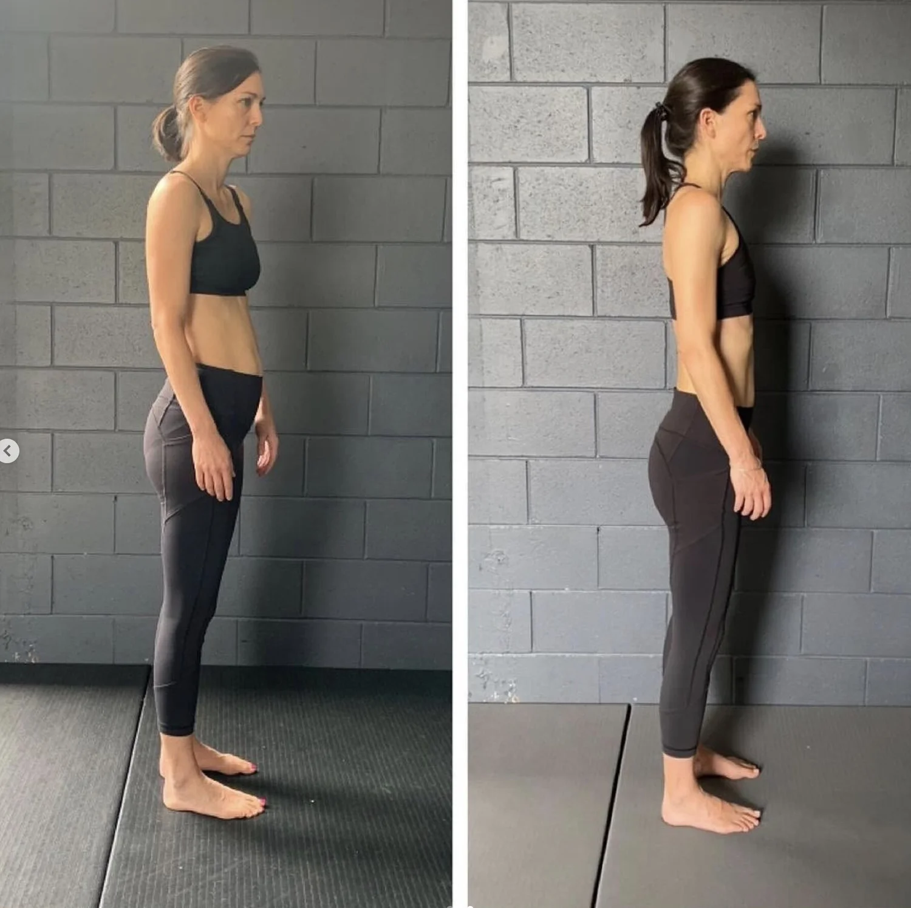

Ready to Start?
Book Your Child's Assessment
90 minutes to understand their movement patterns, identify any developing issues, and create a plan for lasting structural health.

Youth Biomechanics
Catch structural issues early, address conditions like cerebral palsy and Scheuermann's, and improve athleticism, coordination and speed -- all while their bodies are most adaptable.
Why It Matters
Postural issues that go unaddressed in childhood become chronic pain in adulthood. Scoliosis, scapular winging, pelvic asymmetries, and spinal compression patterns all start developing early. By the time they cause pain, the patterns are deeply entrenched and much harder to correct. Catching them in childhood means correcting them before compensation patterns calcify.
Children with conditions like cerebral palsy, Scheuermann's kyphosis, and developmental motor delays benefit enormously from biomechanics-based training. Their nervous systems are still developing, which means the window for rewiring motor patterns is wider than at any other point in life. We work with these conditions to maximise functional capacity.
Young athletes who learn to move correctly gain a massive advantage. Proper gait mechanics translate directly to sprint speed, coordination, agility, and injury prevention. Rather than just training harder, they train smarter -- building a biomechanical foundation that supports every sport they play, for the rest of their lives.
The Advantage
Children and teenagers have four biological advantages that make biomechanics training significantly more effective than in adults.
Children have fewer years of accumulated injuries, poor movement habits, and compensatory patterns. An adult with 20 years of desk work and gym training has layers of dysfunction to unwind. A child may only have a few years of developing patterns -- making correction faster and more complete.
Young brains learn motor skills faster. The neural pathways responsible for movement are still being formed and refined. This means new movement patterns integrate more quickly and permanently than in adults, where the brain must overwrite established patterns rather than create new ones.
Less body mass means less resistance to change. Movement retraining is physically easier when the body has less weight to reorganise. This allows children to practise new patterns with less fatigue and faster skill acquisition, accelerating the correction process.
Children experiment more freely with movement. They don't carry the same fear of pain or failure that adults develop after injuries. This willingness to explore makes them more responsive to coaching and more likely to adopt new patterns without the psychological resistance that often limits adult progress.
Being Honest
Training children and teenagers is rewarding but comes with unique challenges. Attention spans are shorter. Motivation can fluctuate. They may not fully understand why the training matters. And unlike adults who are driven by pain, younger clients often don't have an obvious problem to solve yet.
We address this by making sessions engaging and results-oriented. When a young cricketer sees their bowling speed increase, or a teenager notices they're standing taller without trying, the motivation follows. We also work closely with parents to ensure consistency between sessions.
The key is patience and communication. We explain what we're doing and why, in age-appropriate terms. We celebrate progress. And we structure sessions to maintain focus without burning out their enthusiasm.
Real Results
Xavier started training at age 9 with visible scapular winging, poor core engagement, and postural asymmetries that his parents had noticed getting worse. In just 10 weeks, his scapular positioning improved dramatically, his core began engaging during movement rather than just during exercises, and his standing posture visibly straightened.
At 9 years old, these corrections happen remarkably fast because the patterns haven't had decades to entrench. What might take an adult 12-18 months to correct can often show meaningful improvement in weeks with a child.
10
Weeks
Visible
Posture Change
Matthew was diagnosed with Scheuermann's kyphosis at 14 -- a condition where the thoracic vertebrae wedge forward, creating a pronounced hunchback. His parents were told it would likely worsen and might eventually require surgery.
Through Functional Patterns training, we addressed the movement patterns reinforcing the kyphosis. Matthew's posture improved measurably, his self-confidence grew as he stood taller, and his back pain decreased significantly. While Scheuermann's can't be fully reversed, the progression was halted and meaningful structural improvement was achieved.
Halted
Progression
Posture
Improved
A competitive gymnast came to us looking for an edge in her performance. Her coaches had noticed inconsistencies in her technique that were limiting her scores, particularly in floor and vault.
In just 2 sessions, we identified asymmetries in her gait and rotational patterns that were directly affecting her gymnastic performance. By correcting how she transferred force through her legs and torso, her speed improved and her technique became more consistent. Her coaches noticed the difference immediately.
2
Sessions
Speed
Improved
Working with a young client with cerebral palsy required adapting the Functional Patterns methodology to their specific neurological challenges. CP affects muscle tone, coordination, and motor planning -- all of which influence gait.
By focusing on the fundamental movements -- standing balance, weight shifting, and walking mechanics -- we improved their functional capacity. Their gait became more symmetrical, their balance improved, and they were able to perform daily activities with greater independence. The neuroplasticity advantage of working with a young brain made this progress possible.
Gait
More Symmetrical
Balance
Improved
Ready to Start?
90 minutes to understand their movement patterns, identify any developing issues, and create a plan for lasting structural health.